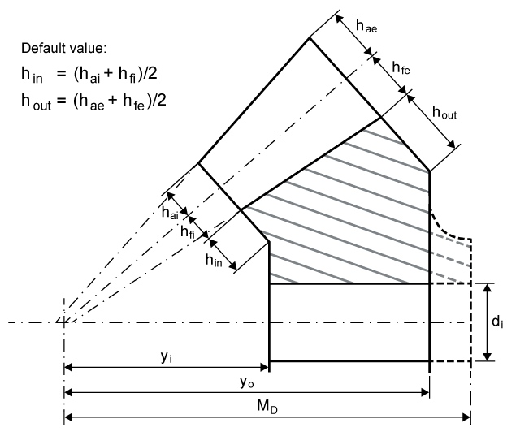

|
|
|


节锥顶至齿轮毛坯前后端的距离/安装距
节锥顶到齿轮毛坯前端的距离，即节锥顶到未加工毛坯前端的轴向距离。
节锥顶到齿轮毛坯后端面的距离，即节锥顶到未加工毛坯后端面的轴向距离。
安装距可以按要求定义。通常，这表示在整体锥小齿轮轴中，从节锥顶到轴肩的距离规定了下一个滚动轴承的安装距。相反，在锥齿轮（无轴）的情况下，安装距通常对应于yo。此距离通常在装配图上规定，并在安装时检查。

图16.7：锥齿轮尺寸标注
Pitch apexes to front and back of gear blank/mounting distance
The Pitch apex to the front of the gear blank is the distance from the pitch apex to the front face of the unworked blank, in the axial direction.
The Pitch apex to back of gear blank is the distance from the pitch apex to the rear face of the unworked blank, in the axial direction.
The Mounting distance can be defined as required. Usually, this means the distance from the pitch apex to the shaft shoulder in integral bevel pinion shafts is specified for the next rolling bearing. In contrast, in the case of bevel gears (without a shaft), the mounting distance usually corresponds to yo. This distance is usually specified on the assembly drawing and checked during mounting.
Figure 16.7: Figure: Bevel gear dimensioning